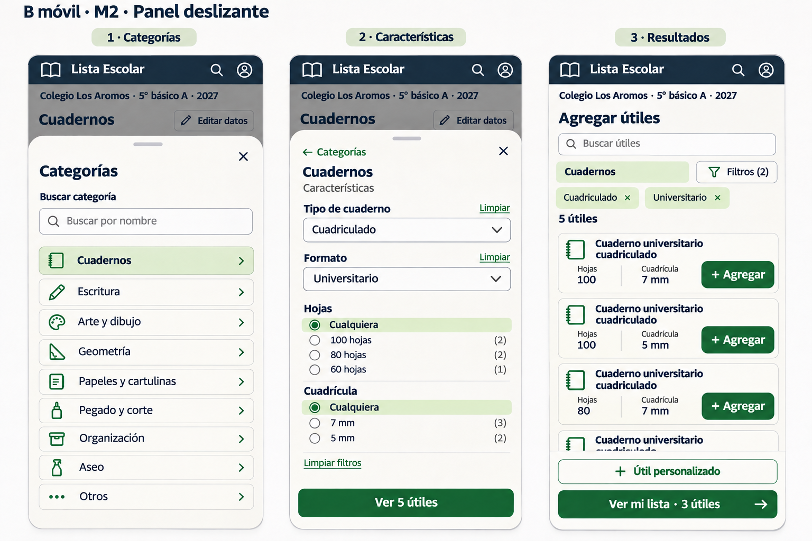

B en escritorio, adaptado a teléfonos
La opción elegida para escritorio es B · Comparar y agregar. En móvil, cada útil se presenta en una fila o tarjeta que aprovecha todo el ancho, con su nombre, características y acción para agregar.
B + M1 ya implementados. Ver la comparación con capturas reales.
Estas dos propuestas muestran tres momentos del mismo flujo: Categorías → Características → Resultados. Cada pantalla aparece por separado en el teléfono.
Ambas conservan un único panel para categorías y atributos, el regreso visible a categorías, filtros opcionales, valores identificados con su unidad y acceso persistente a Mi lista.
M1 · Filas legibles
La opción elegida e implementada para mantener la rapidez de B en pantallas estrechas. Prompt inicial · Refinamiento · Ajuste final · Descargar PNG

M2 · Panel deslizante
Una alternativa con tarjetas de mayor tamaño y contexto de resultados detrás del panel. Prompt inicial · Refinamiento · Descargar PNG


Escritorio elegido · B